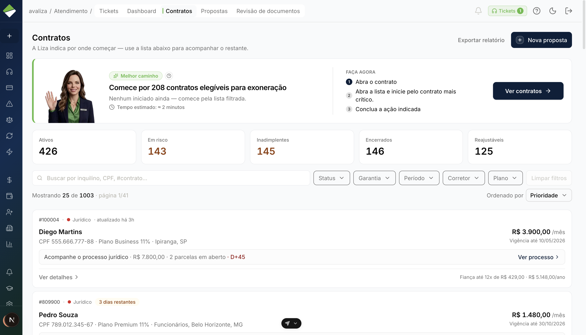
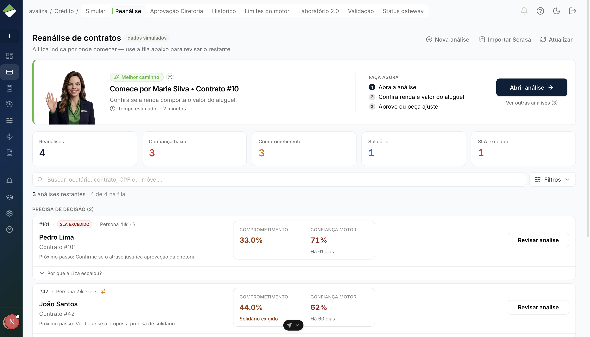
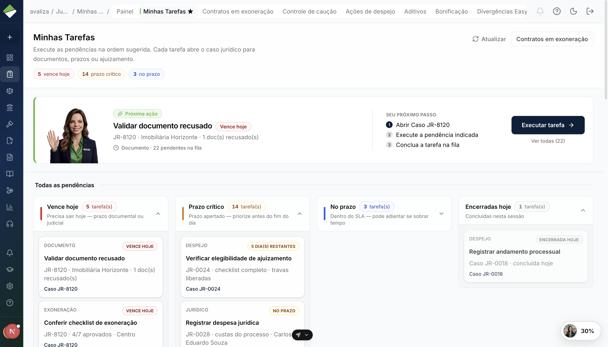

Avaliza 2.0 · Treinamento do dia a dia
Crédito · Inadimplência · Jurídico · Financeiro
Treinamento Onde o trabalho chega, o que você faz na tela e para quem o caso segue depois.
Comece na fila Minhas Tarefas, não o menu
Deixe o recado escreva o porquê no dossiê
Passe o bastão cada área fecha a sua parte
Piloto · 2 de setembro de 2026
Trilha comum
01
Antes de cada setor Comece pela tarefa. Olhe o contrato se precisar de contexto. Faça só a sua parte.
01 · Base Tarefa ≠ menu
Começo do dia
Seu dia começa numa tarefa — não vasculhando o menu Contrato AV-2026-1842
Jornada o que disparou o trabalho
Caso IN #4812 / JR-2026-044
Tarefa o que é seu agora
Minhas Tarefas Aqui está o que precisa de você: prazo, caso e próxima ação.
Carteira / listagem Ótima para consultar. Péssima para escolher o próximo da vez.
A Liza já ordenou a fila. Comece pelo card que ela destacar — em geral, o que vence hoje.
01 · Base Contexto
Quando faltar o quadro
Precisa de contexto? Abra o contrato. Não invente uma etapa. Contrato 360° Partes, estado e o que mais está rolando no mesmo código.
Histórico Quem fez o quê, com qual documento e qual justificativa.
Botão travado O sistema está pedindo algo. Volte no item que falta — não tente contornar.

TELA REAL · /contratos · consulta. Não registra decisão. 01 · Base Bastão
Antes de clicar
Quatro perguntas que cabem em qualquer mesa 1 Como chegou até mim?
2 O que eu preciso conferir?
3 O que eu decido ou executo?
4 Para quem segue depois?
Crédito Decide o que o motor não fechou sozinho.
Inadimplência Decide se a cobertura cabe, e em que valor.
Jurídico Conduz o processo: documento, prazo, ajuizamento.
Financeiro Paga o que já foi aprovado. Não reliquida.
Cobertura aprovada: quem pega o caso? Financeiro pode receber a baixa. Jurídico pode receber a via jurídica — só se alguém encaminhou. Não é uma esteira automática.
Mesa interna
02
Crédito O motor já tentou. Você entra só quando ele pede ajuda — e deixa o porquê escrito.
02 · Crédito Onde começo?
Reanálise de contratos
Comece em Crédito → Reanálise. A Liza já ordenou a fila. Motor Aprova sozinho ou escala: score fora da faixa, valor acima do teto, SLA estourado.
Liza Coloca o urgente no topo e sugere um caminho. Não assina no seu lugar.
Você Abre o dossiê e decide: aprovar, negar ou pedir solidário.

TELA REAL · /credito · clique no card. A listagem Aprovação Diretoria é só um recorte. 02 · Crédito Caso do dia
Exercício · Horizonte Imóveis
Ana Souza cabe na política. Aprove e escreva o porquê. Horizonte Imóveis Ana Souza AV-2026-1842
1 · Conferir Pessoa, proposta, Serasa e o motivo que o motor apontou.
2 · Decidir No painel Decisão da Diretoria — não na lista de cards.
3 · Segue Aprovado: ativação e assinatura em paralelo. Negado: a loja recebe. Solidário: a proposta volta para a imobiliária.
A decisão fica com o seu nome e não desfaz. Se a política não estiver clara, não invente um critério — consulte ou escale.
02 · Crédito Três jeitos
Como classificar
Está claro, no limite ou as fontes brigam? Claro A política cabe como premissa: aprove, escreva o fundamento e deixe seguir.
No limite Não tem critério escrito? Consulte a política vigente. Sem resposta, escale e registre a dúvida.
Fontes brigam A Liza diz uma coisa, o documento diz outra. Reconcilie antes de confirmar.
Posso inventar um score para o caso no limite? Não. Use a política e a alçada que já existem. Sem isso, escale — não crie regra na hora.
Limiar, score, persona e alçada de escalonamento 02 · Crédito A tela da decisão
Dossiê, não listagem
Olhe o dossiê, escreva o porquê, confirme. Pronto. TELA REAL · /credito/analisar · a recomendação da Liza é recado, não carimbo. Aprovada ativação ∥ assinatura
Negada a loja vê o resultado
Solidário volta para a imobiliária montar de novo
02 · Crédito Prática
Para treinar agora
Classifique o caso e deixe o rastro no dossiê A A política cabe — posso aprovar
B Está no limite e não achei o critério
C O Serasa e o documento não batem
O que fazer em cada um A: aprove e encaminhe. B: consulte ou escale. C: reconcilie as fontes antes de confirmar. Erro grave: inventar um critério que não está na política.
Sabe a diferença entre motor, Liza e você Decide no dossiê, não na lista Trata conflito de fontes Consegue dizer para onde o caso foi Mesa interna
03
Inadimplência Você decide se a cobertura cabe. Item a item. Pendência volta. Quem paga é o Financeiro.
03 · Inadimplência Caso do dia
IN #4812 · números de exercício
Pediram R$ 6.200. O teto (VMR) é R$ 5.000. AV-2026-1842 Horizonte Imóveis Ana Souza
Item Evidência Valor Aluguel Boleto + contrato R$ 4.200 Condomínio Boleto + demonstrativo R$ 1.300 IPTU Guia municipal R$ 700 Pedido R$ 6.200
Os R$ 1.200 a mais são um alerta , não uma negativa automática. Você decide parcial ou reprova com a regra vigente — o sistema não recusa sozinho.
Regra vigente para parcial/reprovação e cálculo do VMR 03 · Inadimplência Como analisar
Comece em Minhas Tarefas
Abra o card, feche o checklist, decida cada linha 1 · Card certo Clique em Minhas Tarefas. O caso abre já na tarefa da vez.
2 · Checklist 7/7 Cláusula, assinaturas, e-mail, duplicidade, contrato vigente, VMR e documentos.
3 · Cada lançamento Aprovar, parcial, reprovar ou pendenciar. Sem linha “em análise”, o botão libera.
TELA REAL · /inadimplencia/tarefas · Vence hoje → Prazo crítico → No prazo. 03 · Inadimplência A tela de trabalho
O que trava o botão
Checklist aberto ou linha em análise? Concluir fica cinza. TELA REAL · a barra do rodapé mostra o que ainda falta. Chegou Minhas Tarefas
Conferir caso + evidência
Decidir item a item
Segue pendência, caixa ou jurídico
03 · Inadimplência Três pessoas
Fazer · Conferir · Fechar
Quem fez a 1ª não valida a 2ª. O sistema trava. 1ª · Fazer Faltou a guia de IPTU? Pendencie, registre o contato e espere o retorno.
2ª · Conferir A guia voltou, mas um item ficou “em análise”. Outra pessoa pega essa incoerência.
3ª · Fechar A soma não bate com as linhas? Pare. Isso não é uma terceira análise do zero.
O que a 3ª pessoa confirma? Se o caso, as decisões já registradas, a soma e as evidências fecham — e para onde o caso vai. Ela não refaz o trabalho das outras duas.
Rota de devolução, permissões e bloqueio exato na 2ª/3ª 03 · Inadimplência Quando sai do script
IN #4812 em movimento
Quatro desvios — sem improviso Faltou documento Pendencie a guia. O caso volta para a sua análise quando a resposta chegar.
Item parcial Aprove o que couber e escreva o porquê do valor menor.
Prazo apertado Priorize. Prazo não decide se a cobertura cabe.
Erro tarde demais Não confirme. Registre e use o caminho que a operação validar.
03 · Inadimplência Prática
Exercício · IN #4812
Trate os R$ 6.200 com teto de R$ 5.000 Faça Deixe no caso Pronto quando Decidir os 3 itens Uma decisão por linha Nenhuma linha “em análise” Pendenciar a guia Motivo + contato no Log O retorno volta para a fila Conferir (outra pessoa) Autores diferentes Quem fez não validou a si
O que não pode acontecer Negar só porque passou do teto, concluir com item aberto ou tratar a 3ª pessoa como se fosse uma análise nova.
03 · Inadimplência Você está pronto
Checklist pessoal
Você fecha a sua parte — e sabe para quem passa Começa em Minhas Tarefas Decide cada lançamento Fecha checklist e evidências Pendencia e retoma quando volta Respeita as 3 conferências Entrega para Financeiro ou Jurídico Mesa interna
04
Jurídico Três filas. Documento, prazo, ajuizamento e desfecho — cada um no seu tempo.
04 · Jurídico Três filas
Não misture as mesas
Exoneração, EasyJur e aditivo não moram no mesmo lugar JR-2026-044 Exoneração. Chega em Minhas Tarefas e abre o caso.
EasyJur Divergência da integração. Fila própria no menu — não cria um JR novo.
Aditivo Mudança formal. Trabalha em Aditivos: modelo, ZapSign e ticket de TI.

TELA REAL · /juridico/tarefas · comece pelo card que a Liza destacar. AV-2026-1842 IN #4812 JR-2026-044 Horizonte Imóveis Ana Souza
04 · Jurídico A história do caso
JR-2026-044
Do card na fila até o desfecho — evento por evento Abertura caso na fila
Documentos os 7 itens
Correção procuração fora do modelo
Notificações kit enviado
Prazo semáforo em dias úteis
Ajuizamento só com travas verdes
Andamento linha do tempo
Desfecho restabelecida ou exonerada
A loja vê o mesmo processo numa tela dela. Ela acompanha — não opera a sua mesa.
04 · Jurídico Os 7 documentos
Fora do modelo? Recuse.
Documento errado volta. Ajuizar fica bloqueado. Checklist Endereço do locador · contrato · procuração (modelo oficial) · ID do locador · AR · notificação de ausência (modelo oficial) · declaração de débito.
Exemplo do dia Procuração fora do modelo → recuse com o motivo → peça correção → o ajuizamento continua travado.
TELA REAL · os 7 documentos da exoneração no caso. AR válido Leitura digital ou assinatura física. Qualquer um dos dois serve.
Notificação no endereço errado Pessoa ou endereço incorreto derruba o prazo de 30 dias.
04 · Jurídico Prazo e ajuizamento
Leia as travas no cabeçalho
Prazo apertado não libera o clique de ajuizar
Checklist completo
Indenização paga, se foi aprovada
Sem documento pendente
Sem EasyJur bloqueando Com as travas verdes, Solicitar ajuizamento entra na linha do tempo com o seu nome — e não desfaz. No treino da Liza, não clique nisso.
Natureza dos dias e encadeamento dos marcos 5/15/30/120 04 · Jurídico EasyJur
Fila própria no menu
EasyJur diz “Ajuizado”. No Avaliza, o andamento não está lá. Comparar status, tipo e contrato
Achar o que falta ou conflita
Corrigir e sincronizar
Ou justificar sem mexer
TELA REAL · reconciliação humana. Fechar a divergência não abre um JR. Isso cria um caso novo de exoneração? Não. Você resolve na fila EasyJur. Não nasce JR e o caso de exoneração não anda sozinho.
04 · Jurídico Prática
Exercício · JR-2026-044
Corrija a procuração sem antecipar o ajuizamento O que fazer, o que deixar no caso Recuse a procuração fora do modelo, com o motivo. Quando voltar certa, confira os 7 itens, as notificações e as quatro travas. Só então o ajuizamento entra na conversa. Sucesso: linha do tempo coerente e nenhum clique irreversível com trava vermelha.
Começa na fila certa Confere os sete documentos Envia notificação pelos botões do caso Lê prazo e travas antes de ajuizar Registra andamento e desfecho Separa EasyJur e aditivo Mesa interna
05
Financeiro Você paga o que já foi aprovado. Sem comprovante, não fecha. Valor errado volta para a IN.
05 · Financeiro O caso do dia
A IN já decidiu
Inadimplência aprovou R$ 5.000. Agora é pagar. IN #4812 AV-2026-1842 Horizonte Imóveis Ana Souza
Chegou cobertura aprovada
Conferir valor e destinatário
Fazer informar a data e anexar o comprovante
Fica Pago ou Pago na imobiliária
Você não reabre a análise. Se o valor estiver errado, devolve — não “ajusta” no caixa.
05 · Financeiro Como baixar
Duas tarefas no mesmo caso
Primeiro a data. Depois o comprovante. 1 data prevista
2 pagar os R$ 5.000
3 anexar PDF ou foto
4 status Pago
TELA REAL · /inadimplencia · sem arquivo, o botão não libera. 05 · Financeiro Dois tropeços
Não force o botão
Faltou comprovante? Ou saíram R$ 4.800 em vez de R$ 5.000? Sem comprovante Não confirme. O anexo é o que destrava a tarefa.
Pagou R$ 4.800, a IN aprovou R$ 5.000 Anote a diferença e devolva para a analista de inadimplência. Não mude o mérito no escuro.
Para quem volta a divergência? Para a Inadimplência. Ela é dona do mérito. Você continua dono do caixa.
05 · Financeiro O resto do caixa
Além da indenização
O dia também tem recebíveis, conciliação, repasse e NF TELA REAL · /financeiro/recebiveis · o dashboard só alerta; o trabalho é na fila. Confere o valor sem reanalisar a cobertura Informa a data e anexa o comprovante Devolve diferença para a IN Sabe abrir as outras filas do caixa Visão transversal
06
O mesmo contrato Ana atravessa as quatro mesas. Cada uma fecha a sua parte — sem virar uma esteira única.
06 · Junto Um código, várias decisões
Horizonte Imóveis · Ana Souza
O contrato conecta. Cada tarefa continua com o seu dono. Crédito PROP-2026-0917
Contrato AV-2026-1842
IN #4812
Jurídico JR-2026-044
Financeiro baixa
Renovação, inadimplência e jurídico podem estar abertos ao mesmo tempo. Um não cancela o outro.
06 · Junto Quem pega o bastão
Nem tudo é automático
Às vezes dispara, às vezes só pode, às vezes devolve Dispara A loja comunica o débito → a cobertura chega na sua fila.
Pode disparar Cobertura aprovada → indenização ou exoneração, se alguém encaminhar.
Devolve Pendência resolvida → o caso volta para a análise.
Em paralelo Ativação e assinatura. Jurídico interno e visão da loja.
Uma renovação aberta impede analisar a IN? Não por si só. São ciclos diferentes. Vale o que a tarefa da vez pede.
06 · Junto Onde ler o guia completo
Não misture os três
Jornada de negócio, treino da Liza e tela do menu Jornada Tem gatilho, dono e um resultado. É o ciclo que vocês fecham.
Treino da Liza Ela te guia na prática. Ação crítica não fica registrada no treino.
Tela / painel Ajuda várias jornadas. Abrir a tela não é uma etapa.
Para fechar o treino
07
Consegue explicar o rastro? Reconhecer a fila. Decidir com evidência. Dizer para quem o caso foi.
07 · Avaliação Nível 1
Reconhecer
Onde começa, quem decide, quem paga IN começa onde? A) listagem B) Minhas Tarefas C) contratos B. Minhas Tarefas é a sua fila.
EasyJur divergente: A) abrir JR B) resolver na fila EasyJur C) pagar B. A fila é própria e não cria JR.
Quem confirma a indenização? A) IN B) Jurídico C) Financeiro C. Financeiro paga. IN decide se cabe.
Pronto: 3/3, cada um com uma frase de porquê.
07 · Avaliação Nível 2
Decidir
O que você faria — e por quê Crédito no limite, sem política à mão: aprovar, negar ou escalar? Consultar ou escalar. Não invente o limiar.
IN: R$ 6.200 contra teto de R$ 5.000. Nego na hora? Não. É alerta. Parcial ou reprovação segue a regra vigente.
Jurídico: prazo apertado e procuração inválida. Ajuizo? Não. Checklist incompleto trava o clique — e isso é bom.
07 · Avaliação Nível 3
Fazer de verdade
O que deixar no sistema para alguém conferir depois Área O que fazer Pronto quando Crédito Decidir ou escalar, com o porquê o caso foi para o lugar certo IN 3 itens + checklist + 3 pessoas nada automático indevido Jurídico corrigir o doc e registrar andamento travas ainda no lugar Financeiro data + comprovante Pago, ou devolvido à IN
Erro grave: invadir a decisão de outra área, inventar regra ou clicar no irreversível fora do ambiente seguro.
07 · Avaliação Fechamento
Você está pronto quando...
Consegue contar a história do caso em quatro frases 1 Como chegou?
2 O que conferiu?
3 O que fez?
4 Para onde foi?
Começou certo Fila e caso corretos.
Decidiu com base Regra, evidência — ou escalou.
Fechou a tarefa Travas ok e porquê escrito.
Não invadiu A parte da outra área ficou com ela.
Se quiser o passo a passo com todos os prints, abra o guia do seu setor — os links estão em cada capítulo.
Ciclo da garantia Gatilhos
De onde nasce cada jornada
Você não “abre uma jornada”. Um evento cria o trabalho. Novo cadastro no portal público → Onboarding
Contrato próximo do fim da vigência → Renovação
Proposta simulada → Análise de crédito
Reajuste acima de 10% na renovação ⇢ Reanálise de crédito
Motor escala o caso ⇢ Banca humanizada
Vistoria aponta dano → Danos ao imóvel
Crédito aprovado → Ativação + assinatura
Imobiliária comunica um débito → Inadimplência
Falta documento na análise ⇢ Pendência
Cobertura aprovada → Baixa de indenização
Encaminhamento ao jurídico ⇢ Exoneração
Divergência na integração jurídica → Reconciliação EasyJur
Mudança formal no contrato → Aditivo contratual
Dúvida ou bloqueio de um usuário → Ticket de atendimento
O Avaliza transforma eventos da operação em jornadas acompanháveis — com dono, prazo e histórico.